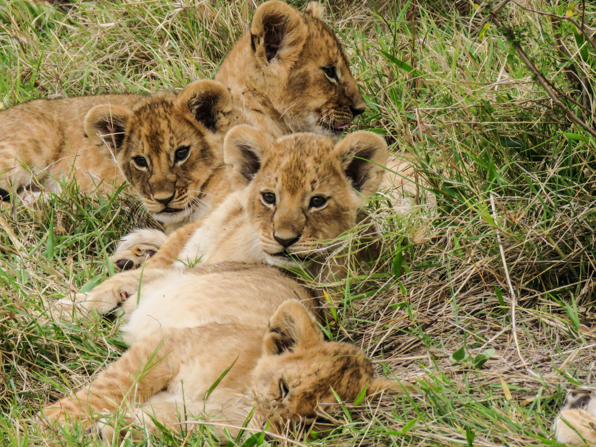
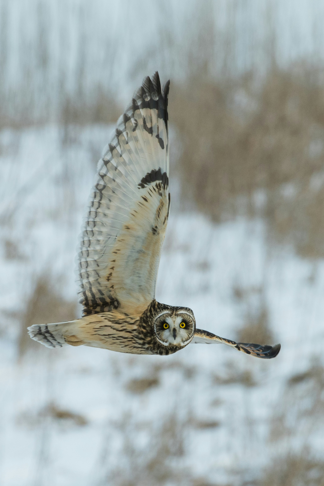
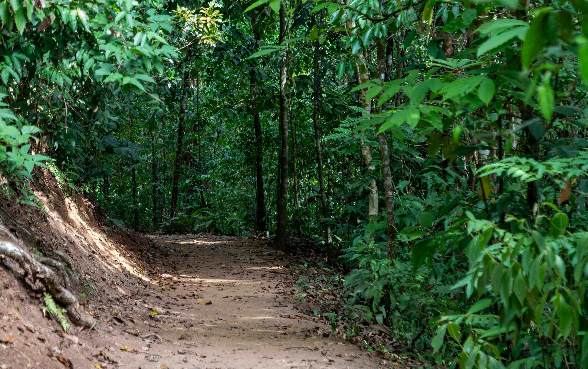

Wildlife SOS: Save Our Species is a three-day awareness and action campaign dedicated to endangered animals and habitat preservation. Hosted by a coalition of conservation groups, this event brings together nature lovers, activists, and communities to celebrate biodiversity and take steps to protect it.
Through storytelling, science education, hands-on workshops, and conservation pledges, we aim to spark a movement that leaves a lasting impact. Each day is filled with talks from field experts, documentary screenings, nature walks, and volunteering opportunities with local wildlife organizations.


Start the weekend by planting the seeds of change—literally! Join us for a community reforestation project in partnership with local parks.

Step into immersive displays and hear the stories of endangered animals from around the globe. Participate in a guided virtual tour of the Wildlife SOS rescue center.

Conclude with a guided nature walk, field journaling workshop, and a reflection circle focused on long-term advocacy and change-making.
Want to make a difference for wildlife? Sign up to attend our 3-day Save Our Species event and be a voice for the voiceless. Whether you love animals, nature, or advocacy, your presence matters!
Akash from New York has RSVP'd.
Raihan from California has RSVP'd.
Rifat from Texas has RSVP'd.
Thanks for RSVPing!